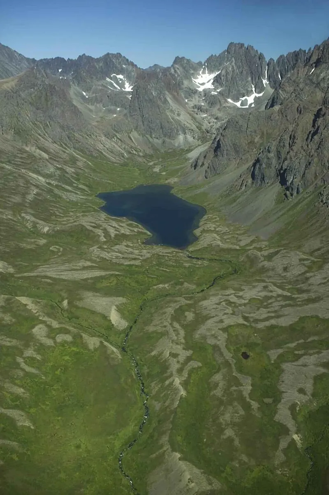
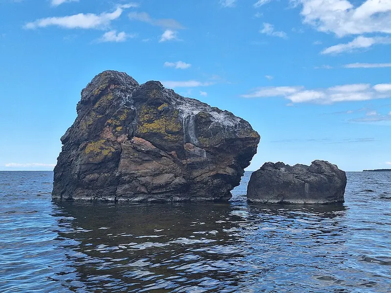
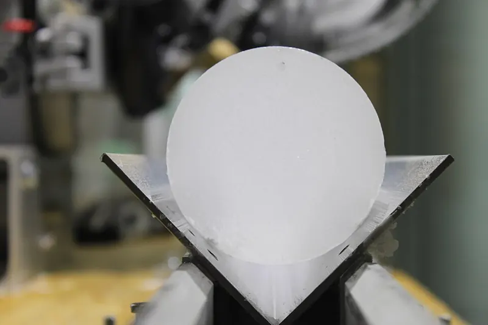
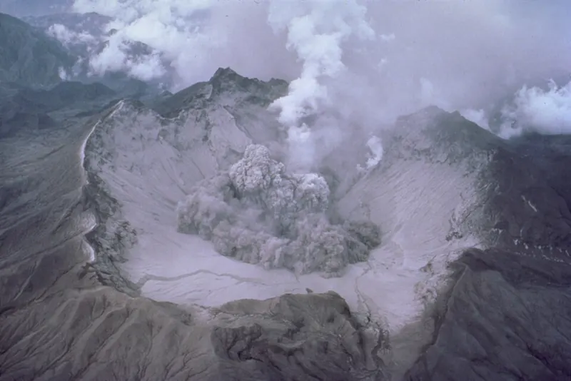

Cambridge Lower Secondary · Science 0893 · Stage 8 · Earth and Space
Climate, Weather and Climate Change
The difference between weather and climate, the evidence that the Earth's climate cycles between ice ages and warm periods, and how changes in the atmosphere change the climate — with graphs, worked examples and a Checkpoint-style quiz.
British & IGCSE › Checkpoint 8 › Checkpoint 8 Science — Complete Course
- Understand that there is evidence that the Earth's climate moves in a cycle between warm periods and ice ages, and that this cycle takes place over very long periods of time. (8ESc.01)
- Understand that the Earth's climate can change because the atmosphere changes. (8ESc.02)
- Describe the difference between climate and weather. (8ESc.03)
1. Key words
| Word / phrase | Meaning / use |
|---|---|
| weather | الطقس — the conditions of the air at one place at one time (today, this week) |
| climate | المناخ — the average weather of a region measured over a long time (usually 30 years or more) |
| atmosphere | الغلاف الجوي — the layer of gases around the Earth |
| average | متوسط — the typical value, found by adding values and dividing by how many there are |
| ice age | عصر جليدي — a long cold period when ice sheets cover large areas of land |
| warm period | فترة دافئة — a time between ice ages when the climate is warmer (we live in one now) |
| ice sheet / glacier | غطاء جليدي / نهر جليدي — a huge, thick layer of ice on land / a slow river of ice |
| ice core | عينة لب جليدي — a long cylinder of ice drilled out of an ice sheet |
| evidence | دليل — facts or observations that support an idea |
| greenhouse gas | غاز دفيئة — a gas that traps heat in the atmosphere, e.g. carbon dioxide, methane, water vapour |
| greenhouse effect | الاحتباس الحراري (تأثير الصوبة) — the warming of the Earth because gases in the atmosphere trap heat |
| climate change | تغير المناخ — a long-term change in the Earth's climate |
| fossil fuel | وقود أحفوري — coal, oil and natural gas; burning them releases carbon dioxide |
| deforestation | إزالة الغابات — cutting down large areas of forest |
2. Weather and climate are not the same
Weather is what the air is like at one place at one time: how hot or cold it is, whether it is raining, how strong the wind is, how cloudy it is. Weather changes from hour to hour and from day to day. A sandstorm in Cairo this afternoon is weather.
Climate is the average weather of a region over a long time — scientists usually use at least 30 years of measurements. Climate tells you what to expect. "Egypt has hot, dry summers and mild winters with very little rain" describes Egypt's climate.
| Weather | Climate | |
|---|---|---|
| Time | Short: hours, days, a week | Long: average over 30 years or more |
| Area | A place (a town, a city) | A larger region or the whole Earth |
| Changes | Changes quickly, every day | Changes slowly, over many years |
| Example sentence | "It will rain in Alexandria tomorrow afternoon." | "Alexandria has warm, dry summers and mild, wet winters." |
| Words to spot | today, tomorrow, this week, at the moment, yesterday | usually, on average, every year, typical, over 30 years |
Climate is what you expect; weather is what you get. You expect a hot summer in Luxor (climate), but one particular day might be cloudy (weather).
Scientists show a climate with a climate graph: bars for the average rainfall in each month and a line for the average temperature.
Reading this graph: the hottest month is August (28 °C); the coldest is January (14 °C), so the temperature range is 28 − 14 = 14 °C. The wettest month is December (55 mm). June, July and August have no rain. So the climate has hot, dry summers and mild, wet winters.
الطقس = حالة الجو النهارده أو الأسبوع ده في مكان معين (مطر، رياح، حرارة) وبيتغير بسرعة. المناخ = متوسط الطقس في منطقة على مدى سنين كتير (حوالي ٣٠ سنة أو أكتر). لو الجملة فيها "النهارده / بكره / امبارح" يبقى طقس؛ لو فيها "عادةً / في المتوسط / كل سنة" يبقى مناخ.
3. The Earth's climate moves in a cycle
The Earth's climate has never stayed the same. For hundreds of thousands of years it has moved in a cycle: long, cold ice ages, when huge ice sheets covered much of North America and northern Europe, and shorter warm periods between them. We are living in a warm period now; it began about 11 700 years ago.
- One full cycle (from one warm period to the next) takes about 100 000 years — far longer than human history.
- The temperature usually falls slowly into an ice age over tens of thousands of years, then rises quite quickly into a warm period.
- At the coldest point of the last ice age, about 20 000 years ago, so much water was frozen in ice sheets that the sea level was about 120 m lower than today.
- Scientists think the cycle is started by slow changes in the Earth's path around the Sun and in the tilt of its axis. These change how much sunlight reaches different parts of the Earth.
4. The evidence for ice ages and warm periods
Nobody was measuring temperatures 100 000 years ago, so how do we know? Scientists use several kinds of evidence, and they all agree with each other.
| Evidence | What scientists find | What it tells us |
|---|---|---|
| Ice cores | Long cylinders of ice drilled from Antarctica and Greenland. Snow falls in layers each year and becomes ice, trapping tiny bubbles of air. The Antarctic cores go back about 800 000 years. | The deeper the ice, the older it is. The air bubbles show how much carbon dioxide was in the air then, and the ice itself shows how cold it was. Both rise and fall in the same cycle. |
| Fossils | Fossils of animals and plants that need a warm climate (e.g. hippopotamus bones in Britain) and of cold-climate animals (e.g. woolly mammoths) in places where they could not live today | The climate of that place was once warmer, or colder, than now |
| Rocks and landscapes | U-shaped valleys and huge boulders carried hundreds of kilometres from where they formed, in places with no ice today | Glaciers and ice sheets once covered these areas |
| Sediments and pollen | Layers of mud at the bottom of oceans and lakes, with shells of tiny sea creatures and pollen grains | Which plants grew and how warm the sea was, layer by layer, over time |



5. Climate can change when the atmosphere changes
The atmosphere is the layer of gases around the Earth. Some of these gases — carbon dioxide, methane and water vapour — are greenhouse gases. This is how they warm the Earth:
- Energy from the Sun (sunlight) passes through the atmosphere and warms the Earth's surface.
- The warm surface gives off energy as heat (infrared).
- Some heat escapes to space, but greenhouse gases absorb some of it and send it back towards the Earth.
- So the atmosphere traps heat, like the glass of a greenhouse — this is the greenhouse effect.
The greenhouse effect is natural and we need it: without it the Earth's average temperature would be about −18 °C, too cold for most life. The problem is when the amount of greenhouse gas increases — more heat is trapped and the climate warms.
| Change in the atmosphere | Cause | Effect on climate |
|---|---|---|
| More carbon dioxide | Burning fossil fuels (coal, oil, natural gas) in power stations, cars and factories; deforestation (fewer trees take in carbon dioxide for photosynthesis, and burning forests releases it) | More heat trapped → warming |
| More methane | Cattle and other farm animals, rice fields, rubbish in landfill sites, leaks from natural gas | More heat trapped → warming |
| Volcanic ash and gases high in the atmosphere | A very large volcanic eruption | Blocks some sunlight → cooling for a year or two |
| Carbon dioxide rising and falling naturally | Part of the ice-age cycle (the ice cores show less carbon dioxide during ice ages) | Makes the natural warming and cooling stronger |
The evidence today: careful measurements since 1958 show that the carbon dioxide in the air has risen every year, from about 317 parts per million in 1960 to more than 410 in 2020. Ice cores show it was never above about 300 parts per million in the 800 000 years before the Industrial Revolution. Over the same time the Earth's average temperature has risen by more than 1 °C. Most scientists agree that this change is caused mainly by humans burning fossil fuels.
Possible effects of climate change: sea levels rise (ice on land melts and sea water expands when it warms) — a danger for low coasts such as the Nile Delta; more heatwaves, droughts and floods; habitats change and some species cannot survive (for example coral reefs in the Red Sea can be damaged by hot water). We can reduce the change by using renewable energy, saving energy, and planting trees.
غازات الدفيئة (زي ثاني أكسيد الكربون والميثان) بتحبس الحرارة في الغلاف الجوي. لما نحرق الوقود الأحفوري بيزيد ثاني أكسيد الكربون ← حرارة أكتر بتتحبس ← الأرض بتسخن. يعني تغيّر الغلاف الجوي = تغيّر المناخ.
6. Worked examples
Worked example 1 — Tick (✓) to show whether each sentence describes weather or climate. [3]
| Sentence | Weather | Climate |
|---|---|---|
| (a) It is raining heavily in Alexandria this morning. | ✓ | |
| (b) Cairo has hot, dry summers and mild winters. | ✓ | |
| (c) Tomorrow will be windy, with a highest temperature of 31 °C. | ✓ | |
| (d) Aswan gets very little rain in a typical year. | ✓ | |
| (e) Yesterday there was a sandstorm. | ✓ |
- Look for time words: "this morning", "tomorrow", "yesterday" → weather (a, c, e).
- "Has hot summers", "in a typical year" describe what is usual over many years → climate (b, d).
- Marks: 5 correct = 3; 4 correct = 2; 3 correct = 1.
- Common mistake: (d) is about rain, so students tick weather. Rain can be part of climate — the key words are typical year.
Worked example 2 — Use the climate graph in section 2. (a) Which is the wettest month? [1] (b) Calculate the range of average temperature. [1] (c) Describe the climate of the city. [2] (d) Explain why this is a climate graph and not a weather record. [1]
- (a) December (55 mm, the tallest bar).
- (b) Highest 28 °C (August) − lowest 14 °C (January) = 14 °C. Include the unit.
- (c) Summers are hot and dry (1); winters are mild/cool and wetter (1). Quote numbers if you can: about 28 °C and no rain in summer.
- (d) The values are averages over 30 years, not measurements from one day or one year (1).
Worked example 3 — Use the ice-age graph in section 3. (a) Is the Earth in a warm period or an ice age now? [1] (b) About how long is one cycle from one warm period to the next? [1] (c) Describe how ice cores give evidence for this cycle. [2]
- (a) A warm period (the line is at the warm level, 0 °C compared with today, at the right-hand end).
- (b) The warm peaks are about 400, 335, 245 and 128 thousand years ago, roughly 100 thousand years apart → about 100 000 years.
- (c) Snow builds up in yearly layers, so deeper ice is older (1); the ice and the trapped air bubbles show the temperature and the carbon dioxide at that time, and they go up and down in a repeating pattern (1).
- Common mistake: writing 100 years or 1000 years. The cycle is very long — about a hundred thousand years.
Worked example 4 — Explain how burning fossil fuels can change the Earth's climate. [3]
- Burning fossil fuels releases carbon dioxide into the atmosphere (1).
- Carbon dioxide is a greenhouse gas; it traps heat / stops some heat escaping to space (1).
- More trapped heat makes the Earth's average temperature rise (global warming / climate change) (1).
- Exam tip: 3 marks = 3 linked steps: gas released → traps heat → temperature rises. Do not say the gas "makes a hole" — that is a different topic (the ozone layer).
Worked example 5 — In 1991 a very large volcano erupted in the Philippines. For about the next two years, the Earth's average temperature was slightly lower. Suggest why. [2]
- The eruption threw ash and gases high into the atmosphere (1).
- These blocked / reflected some sunlight, so less energy reached the Earth's surface and it cooled (1).
- This shows that any change in the atmosphere can change the climate — warming or cooling.

- Mixing up weather and climate. One cold winter, or one hot week, is weather. Climate is the average over 30 years or more.
- Saying ice ages happen every few hundred years. The cycle takes about 100 000 years.
- Thinking the greenhouse effect is always bad. The natural greenhouse effect keeps the Earth warm enough for life; the problem is extra greenhouse gas.
- Writing "carbon dioxide makes a hole in the atmosphere". Carbon dioxide traps heat; the ozone hole is a different problem.
- Saying oxygen or nitrogen are greenhouse gases. The ones to know are carbon dioxide, methane and water vapour.
- Describing ice-core evidence without saying why it works: deeper ice is older, and the air bubbles are samples of old air.
- Tick a table: is each sentence weather or climate?
- Read a long-time graph (often hundreds of thousands of years): find a warm period or ice age, read a temperature, work out roughly how long a cycle takes. Check the axis — the time is often in thousands of years.
- Describe evidence for ice ages (ice cores, fossils, rocks) — say what is found and what it shows.
- Explain how a change in the atmosphere changes the climate — use the chain: gas → traps heat → temperature rises.
- Link two graphs — e.g. carbon dioxide and temperature rising and falling together in ice-core data.
- Evaluate a claim such as "It was cold last week, so the climate is not warming" — answer with the weather/climate difference.
Practice
- Weather = conditions at one place at one time; changes daily. Climate = average weather over a long time (30 years or more).
- The Earth's climate moves in a cycle of ice ages and warm periods, about 100 000 years long; we live in a warm period now.
- Evidence: ice cores (layers and air bubbles), fossils, rocks and landscapes shaped by ice, sediments.
- Greenhouse gases (carbon dioxide, methane, water vapour) trap heat in the atmosphere.
- A change in the atmosphere changes the climate: more carbon dioxide (fossil fuels, deforestation) → warming; volcanic ash → short cooling.
All pages in this course
Start here
- Stage 8 Science: The Tests and How to Prepare
- Thinking and Working Scientifically: Models, Investigations and Analysing Results
Biology
- Joints and Antagonistic Muscles
- Blood and Its Components
- Breathing, Gas Exchange and Diffusion in the Lungs
- A Balanced Diet, Energy Stores and Lifestyle
- Aerobic Respiration
- Ecosystems, Bioaccumulation and Invasive Species
Chemistry
- The Structure of the Atom
- Purity, Concentration and Chromatography
- Word Equations, Exothermic and Endothermic Reactions
- The Reactivity of Metals
- Impure Products and Solubility of Salts
Physics
- Speed and Distance–Time Graphs
- Balanced and Unbalanced Forces, and Moments
- Pressure, Particles and Diffusion
- Reflection and Refraction
- Dispersion and Colour
- Magnetic Fields and Electromagnets
Earth and space
- The Earth's Magnetic Field and Earth's Resources
- Climate, Weather and Climate Change
- Galaxies and Asteroids
Practice tests